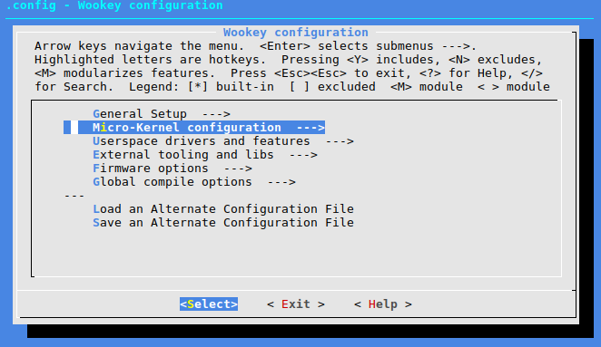
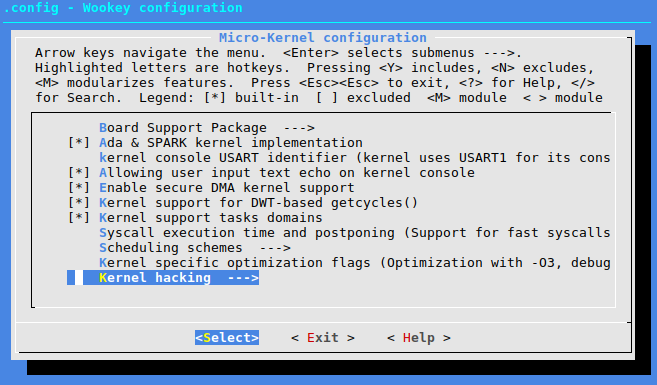
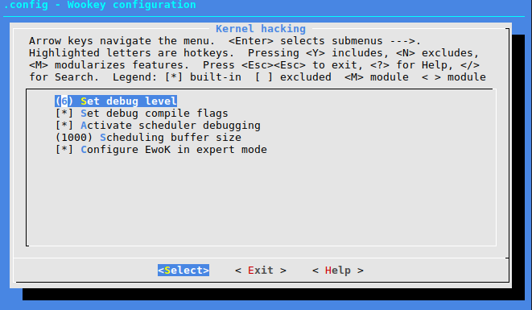

9.8. Debugging and logging¶
Contents
9.8.1. Activating the debug¶
9.8.1.1. Configuring for debugging¶
In the kernel hacking section of the menuconfig, it is possible to set the debug level of the kernel.
  It will add the -ggdb flags to GCC. There is no impact on
the target binary size, as the generated HEX file has no debug symbol.
9.8.1.2. WooKey serial console¶
The kernel is outputting its console in the USART configured in the kernel menu of the menuconfig. On the WooKey board, USART1 and USART4 can be used. On Discovery boards USART1 (using GPIOB6 and GPIOB7 connected to the host PC USB through a TTL to USB connector) can be used.
Beware that with informational debug, the kernel output might be huge and generate big latencies. This may have an impact on the userspace drivers behavior.
9.8.2. Debugging userspace drivers and applications¶
The std library supports a printf() function and prints
the content on the kernel USART through a syscall (see lib_std).
9.8.3. Using Minicom and GDB¶
By default USART1 (configurable USART6 depending on the board) is used as a kernel logging output.
Hint
On the STM32F407, the USART1 uses the PB6 pin as its output TX, and PB7 as the RX input.
With gdb, you can load the ELF file of the userspace application in order to easily manipulate its symbols:
(gdb) symbol-file build/armv7-m/st32f407discovery/apps/myapp/myapp.elf
(gdb) print myvar
12
(gdb) break myfunction
(gdb) monitor reset halt
(gdb) continue
(gdb) Breakpoint 1: myfunction at main.c:28